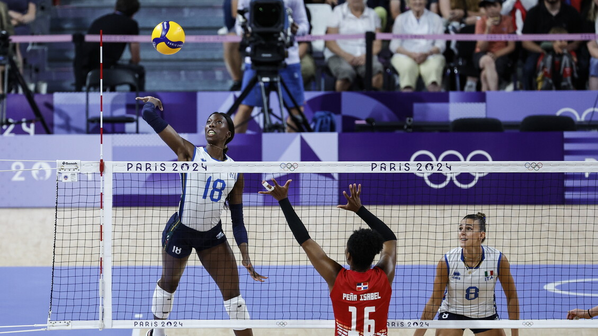
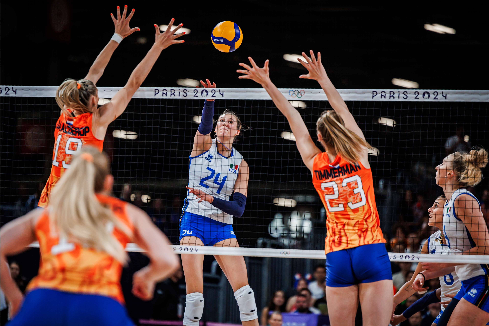
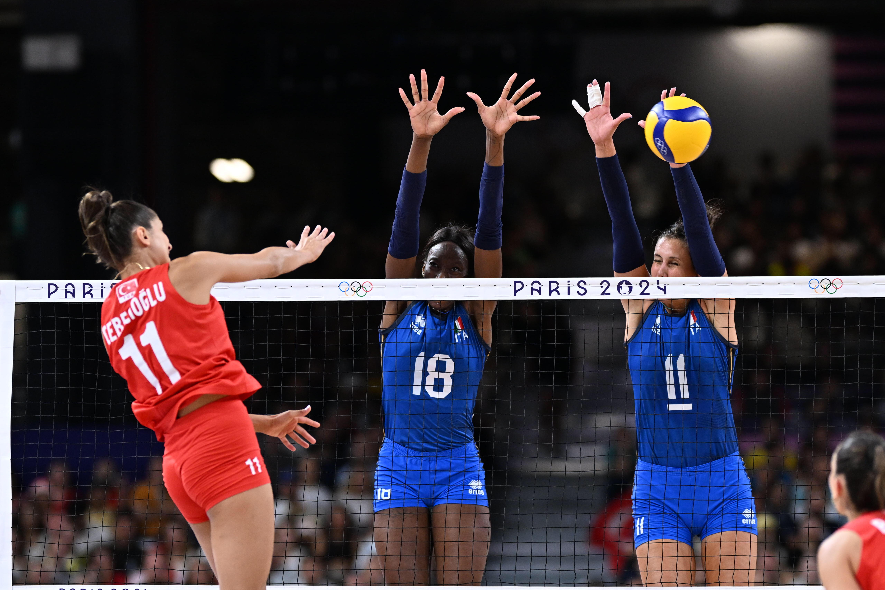

Pool C
La fase a gironi è stata il primo vero test dell’Italia alle Olimpiadi di Parigi 2024. Le Azzurre dovevano entrare nel torneo con il ritmo giusto, gestire la pressione dell’esordio e dimostrare di poter competere contro squadre molto diverse tra loro.
L’Italia era nella Pool C con Repubblica Dominicana, Paesi Bassi e Turchia. Il girone non era banale: la Repubblica Dominicana era una squadra fisica, i Paesi Bassi erano ordinati e continui, mentre la Turchia era considerata una delle avversarie più forti del torneo.
La cosa più interessante è stata la crescita partita dopo partita. L’Italia ha iniziato con una vittoria non semplice, poi ha trovato più sicurezza contro i Paesi Bassi e infine ha chiuso il girone con una prova molto forte contro la Turchia.
Italia - Repubblica Dominicana
L’Italia ha iniziato il torneo contro la Repubblica Dominicana vincendo 3-1, con i parziali di 25-19, 24-26, 25-21 e 25-18. È stata una partita utile per rompere la tensione dell’esordio, ma anche per capire che il torneo olimpico non avrebbe regalato nulla.
Dopo un buon primo set, le Azzurre hanno perso il secondo 24-26. Quel momento poteva complicare la gara, perché quando una squadra perde un set ai vantaggi rischia di perdere lucidità. L’Italia invece ha reagito, ha ripreso ordine e ha gestito meglio i due set successivi.
Il tabellino conferma il peso dell’attacco azzurro: Paola Egonu ha chiuso con 25 punti, mentre Anna Danesi e Myriam Sylla hanno dato un contributo importante. Più che una vittoria spettacolare, è stata una vittoria di carattere.


Italia - Paesi Bassi
Nella seconda gara l’Italia ha battuto i Paesi Bassi 3-0, con i parziali di 29-27, 25-18 e 25-19. Il primo set è stato il più combattuto: vincerlo ai vantaggi ha dato grande fiducia alla squadra e ha cambiato il peso della partita.
Rispetto alla gara d’esordio, l’Italia è sembrata più stabile. La battuta ha creato più problemi alla ricezione avversaria e il muro-difesa ha funzionato meglio. In questa partita è stata fondamentale Ekaterina Antropova, che ha realizzato 33 punti, risultando la miglior realizzatrice dell’incontro.
Dopo la gara, Velasco ha usato una frase molto diretta per descrivere il valore del gruppo: “la nazionale femminile è tanta roba”. Questa frase rende bene l’idea: l’Italia non stava vincendo solo grazie alle singole giocatrici, ma grazie a una squadra completa e con tante soluzioni.
Italia - Turchia
L’ultima partita del girone è stata contro la Turchia, una delle squadre più temute del torneo. L’Italia ha vinto 3-0 con parziali netti: 25-14, 25-16 e 25-21. È stata la prova più convincente della fase a gironi.
In questa gara le Azzurre hanno mostrato grande equilibrio. Il servizio ha messo pressione alla Turchia, il muro ha limitato molte soluzioni offensive e la difesa ha permesso di ricostruire tanti palloni. Paola Egonu ha chiuso con 20 punti, seguita da Myriam Sylla e Anna Danesi.
Il 3-0 contro la Turchia ha avuto un valore enorme, perché non era solo una vittoria di classifica. Era un messaggio al resto del torneo: l’Italia non era semplicemente qualificata, ma era una squadra capace di imporre il proprio gioco anche contro una nazionale di altissimo livello.

Risultati della fase a gironi ▼
| Partita | Risultato | Parziali |
|---|---|---|
| Italia - Repubblica Dominicana | 3-1 | 25-19, 24-26, 25-21, 25-18 |
| Italia - Paesi Bassi | 3-0 | 29-27, 25-18, 25-19 |
| Italia - Turchia | 3-0 | 25-14, 25-16, 25-21 |
Sintesi del girone
L’Italia ha chiuso la fase a gironi con tre vittorie su tre e un solo set perso. Dopo l’esordio più complicato contro la Repubblica Dominicana, la squadra ha aumentato continuità e sicurezza.
Il dato più importante è la crescita: prima la reazione, poi la stabilità, infine il dominio contro una squadra forte come la Turchia. Questo ha preparato le Azzurre alla fase a eliminazione diretta.